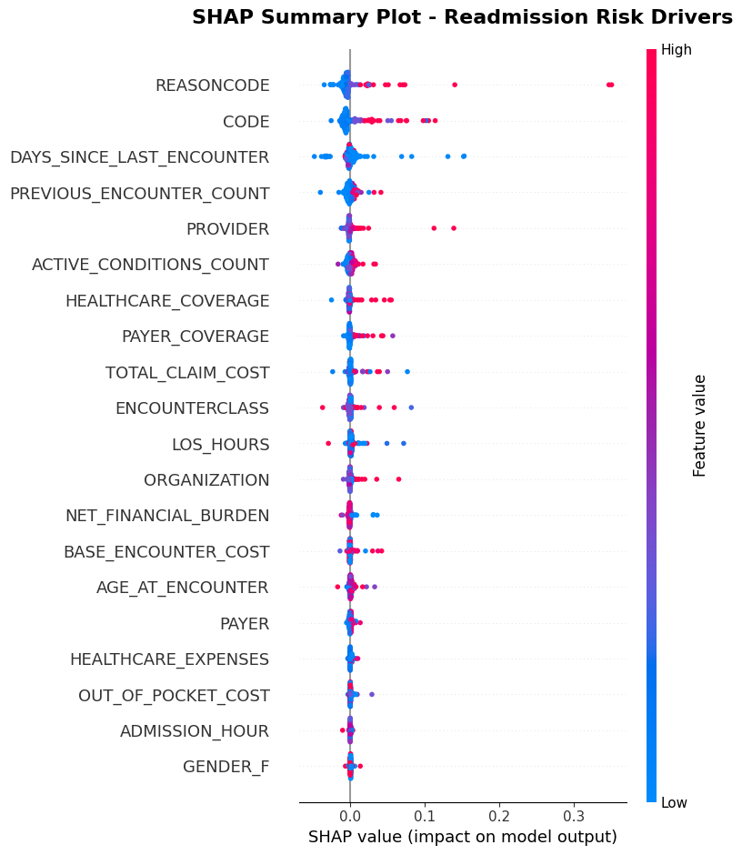

Mapping Hospital Readmission Bottlenecks with XAI and Process Mining
Executive Summary:
This project combines machine learning, explainable AI, and process mining to understand the operational bottlenecks behind 30-day hospital readmissions. Instead of only predicting whether a patient is likely to be readmitted, the project also maps how high-risk and low-risk patients move through the healthcare system differently.
I generated a large synthetic healthcare dataset using Synthea, processed more than 3.1 million clinical encounters with PySpark, trained a Random Forest classifier for readmission prediction, used SHAP to identify the strongest risk drivers, and then applied PM4Py to visualize patient journeys as directly-follows graphs.
The main finding is that high-risk patients do not simply have more encounters. They also experience more complex care pathways, more acute-care recycling, and faster return loops into emergency or inpatient care. This shows how predictive modelling and process mining can be combined to move from “who is at risk?” to “where is the system failing?”
Link to GitHub Repository: Hospital Readmission Bottleneck Analysis ↗
Link to Full Report: Hospital Readmission Bottleneck Analysis Report ↗
Business Problem:
Hospital readmissions create both clinical and operational pressure. They increase costs, consume staff and bed capacity, and often indicate that a patient's previous care pathway did not fully stabilize them. However, identifying high-risk patients alone is not enough. Healthcare administrators also need to understand where these patients get stuck inside the system.
This project addresses that gap by combining risk prediction with process mining. The model first identifies patients with elevated readmission risk. Then, explainable AI is used to extract the main risk driver and split patients into meaningful cohorts. Finally, process mining shows how these cohorts move through admissions, discharges, emergency care, inpatient care, ambulatory care, and wellness visits.
Dataset & Technical Context:
The dataset was generated with Synthea to simulate healthcare activity at the scale of a large state-level health system. The final dataset contains 56,493 unique patients and 3,133,014 clinical encounters. From these encounters, I created an event log with 6,266,030 admission and discharge events for process mining.
The prediction target is 30-day readmission. A patient encounter is labelled as readmitted if the patient was discharged alive and then returned for emergency or inpatient care within 30 days.
Synthetic population generated with Synthea.
Large-scale encounter-level dataset.
Admission and discharge events for PM4Py.
Cloud & Computing Setup:
The project was run on Google Cloud Platform using a Vertex AI compute environment. The machine configuration was an N2 instance with 32 vCPUs and 128 GB RAM. This allowed me to process millions of rows while still keeping the machine learning and SHAP workflow compatible with Python-based tools such as scikit-learn and PM4Py.
The Synthea generation stage was controlled carefully to avoid memory crashes. Instead of using all 32 cores at once, I ran 8 concurrent Java processes at a time, capped each process at around 2 GB of RAM, pushed each generated CSV segment to Google Cloud Storage, and cleaned local files immediately after upload.
End-to-End Pipeline
Methodology:
- Synthetic Data Generation: I used Synthea to create a large synthetic healthcare dataset representing patient histories, encounters, conditions, providers, payers, and organizations.
- Cloud-Based Data Storage: Generated CSV files were written to Google Cloud Storage so they could be loaded reliably into the distributed preprocessing pipeline.
- Distributed Preprocessing: I used PySpark on Vertex AI to read the distributed CSV files, join patient and encounter records, calculate readmission labels, and engineer patient journey features.
- Feature Engineering: I created clinical, financial, temporal, and operational features such as age at encounter, length of stay, admission hour, weekend admission, previous encounter count, days since last encounter, active condition count, and out-of-pocket cost.
- Leakage Prevention: I removed variables that would reveal the target too directly, such as days_to_readmission, next_encounter_start, next_encounter_class, and DEATHDATE.
- Predictive Modelling: I trained a Random Forest classifier and optimized it with Optuna using PR-AUC, which is more appropriate than accuracy or ROC-AUC for a severely imbalanced readmission dataset.
- Explainable AI: I used SHAP TreeExplainer to identify which features were driving readmission risk and found REASONCODE to be the strongest risk driver.
- Risk Cohort Stratification: I used the SHAP-derived REASONCODE threshold to split patients into high-risk and low-risk cohorts.
- Process Mining: I generated directly-follows graphs with PM4Py to compare the patient pathways, transition frequencies, rework loops, and delays across the two cohorts.
Data Selection, Preprocessing, Feature Engineering and Transformation:
The target variable is highly imbalanced. Out of 3,133,014 valid encounters, approximately 3,044,790 are negative cases and only 88,224 are positive readmission cases. This means only about 2.9% of encounters lead to a 30-day readmission.
| Metric | Count / Percentage |
|---|---|
| Total Unique Patients | 56,493 |
| Total Clinical Encounters | 3,133,014 |
| No Readmission | 3,044,790 / ~97.1% |
| Readmission | 88,224 / ~2.9% |
| Train / Validation / Test Split | 90% / 5% / 5% |
Feature engineering focused on making the patient journey measurable. I created variables that represent not only the current encounter, but also the patient's historical utilization pattern and care recency.
Clinical & Financial Features
AGE_AT_ENCOUNTER, NET_FINANCIAL_BURDEN, OUT_OF_POCKET_COST, HEALTHCARE_EXPENSES, and HEALTHCARE_COVERAGE.
Comorbidity Burden
ACTIVE_CONDITIONS_COUNT measures how many medical conditions were active at the exact time of admission.
Temporal & Operational Features
LOS_HOURS, ADMISSION_HOUR, IS_WEEKEND, PREVIOUS_ENCOUNTER_COUNT, and DAYS_SINCE_LAST_ENCOUNTER.
For categorical variables, I used a hybrid encoding strategy. Low-cardinality variables were handled with one-hot encoding, while high-cardinality variables such as CODE, PROVIDER, ORGANIZATION, PAYER, and REASONCODE were handled with target encoding. This avoided exploding the feature space while still preserving useful risk information.
Model Assumptions, Training, and Performance Metrics:
The core model is a Random Forest classifier. I selected Random Forest because it is strong for tabular data, robust to non-linear relationships, and compatible with SHAP TreeExplainer. The goal was not only to predict readmissions, but also to interpret what drives those predictions.
I optimized the model with Optuna over 50 trials using the TPE sampler. The optimization metric was PR-AUC, not accuracy. This matters because the readmission class is very rare. In a dataset where more than 97% of cases are non-readmissions, accuracy can look strong even when the model fails to identify the minority class.
| Hyperparameter | Optimal Value |
|---|---|
| n_estimators | 300 |
| max_depth | 23 |
| min_samples_split | 22 |
| min_samples_leaf | 8 |
| max_features | log2 |
| max_samples | ~0.56 |
Evaluation Based on Relevant Metrics:
The final Random Forest model was evaluated on the unseen 5% test set. The key metric is PR-AUC because it focuses on how well the model identifies the rare readmission class.
Main metric for imbalanced readmission prediction.
When the model flags high risk, it is correct 77.61% of the time.
The model prioritizes confident high-risk cases over catching every case.
Balances precision and recall.
A useful metric for imbalanced classification.
The high precision is important for this project because SHAP thresholds are later extracted from model behaviour. A low-precision model would generate noisy explanations and weak risk cohorts. By prioritizing PR-AUC and precision, the model creates a more reliable basis for process mining.
Explainable AI: From Prediction to Risk Threshold:
SHAP analysis identifies REASONCODE as the strongest driver of readmission risk, followed by CODE and DAYS_SINCE_LAST_ENCOUNTER. REASONCODE represents the diagnosis, illness, or medical reason behind the encounter.

Figure 1. SHAP summary plot showing REASONCODE as the strongest global driver of readmission risk.
Instead of using SHAP only as a descriptive explanation tool, I used it as a filtering mechanism. I isolated cases where REASONCODE had a positive SHAP contribution and calculated a target-encoded risk threshold of approximately 0.09. Conditions above this threshold were used to identify high-risk patients for process mining.
Important interpretation: In this project, “dangerous” and “safe” refer to statistical readmission risk, not clinical mortality or disease severity. A condition can appear “safe” if patients do not survive long enough to be readmitted, so the score should be interpreted as an operational readmission metric.
| High-Risk REASONCODE Example | Target-Encoded Risk Score |
|---|---|
| Myocardial infarction | 0.9123 |
| Injury of knee | 0.7190 |
| Primary small cell malignant neoplasm of lung | 0.6498 |
| History of coronary artery bypass grafting | 0.5105 |
Process Mining and Patient Journey Comparison:
After extracting the risk threshold, I split the event log into high-risk and low-risk cohorts. Both cohorts contain a similar number of patients, but their event volume is very different.
| Risk Group | Patients | Events | Unique Activities | Average Events / Patient |
|---|---|---|---|---|
| High-Risk | 28,149 | 3,966,854 | 20 | 140.92 |
| Low-Risk | 28,344 | 2,299,176 | 20 | 81.12 |
High-risk patients generate around 73.7% more events per patient. This means the difference is not caused by different activity types. Both groups have the same 20 activity types. The real difference is how frequently and how quickly patients cycle through those activities.
High-Risk Patient Journey:
The high-risk process graph is denser and shows more rework loops, especially around acute and inpatient care. These loops suggest repeated returns to the healthcare system after discharge.

Figure 2. High-risk patient journey DFG. The graph shows denser pathways and more repeated acute-care transitions.
Low-Risk Patient Journey:
The low-risk group shows a stronger wellness-oriented care pattern. Compared with the high-risk group, these patients are more likely to cycle through preventive or routine care pathways rather than acute readmission loops.

Figure 3. Low-risk patient journey DFG. The graph shows relatively more wellness-oriented transitions and fewer inpatient readmission loops.
Interpretation of Results:
The process mining results show two main bottlenecks. First, high-risk patients return to acute care much faster than low-risk patients. For example, the median delay from Emergency Discharge to Emergency Admission is 167 hours for high-risk patients, compared with 1,055 hours for low-risk patients. This suggests that high-risk patients are often discharged and then return quickly.
Second, high-risk patients experience longer delays in some cross-care transitions. For example, Wellness Discharge to Inpatient Admission takes a median of 10,578 hours for high-risk patients, compared with 4,832 hours for low-risk patients. This suggests that some high-risk patients experience long periods of instability between care episodes before eventually needing inpatient care.
| Transition | High-Risk Median Delay | Low-Risk Median Delay | Interpretation |
|---|---|---|---|
| Emergency Discharge → Emergency Admission | 167 h | 1,055 h | High-risk patients return to emergency care much faster. |
| Inpatient Discharge → Inpatient Admission | 733 h | 4,032 h | High-risk patients show a faster inpatient readmission loop. |
| Wellness Discharge → Inpatient Admission | 10,578 h | 4,832 h | High-risk patients face longer instability before inpatient admission. |
| Ambulatory Discharge → Emergency Admission | 336 h | 2,085 h | High-risk patients escalate from ambulatory to emergency care faster. |
The main operational insight is that high-risk patients face a dual bottleneck: rapid acute-care recycling and delayed cross-care handoffs. In practical terms, the hospital should not only predict readmission risk, but also inspect the discharge-to-readmission loops and transitions where patients return too quickly or wait too long between care settings.
Skills:
Cloud & Infrastructure: Google Cloud Platform, Vertex AI, N2 compute instances, Google Cloud Storage, cloud-based data processing
Distributed Data Engineering: PySpark, Spark DataFrames, distributed joins, window functions, large-scale CSV ingestion, GCS connector
Synthetic Healthcare Data: Synthea, large-scale patient generation, encounter-level data modelling, event-log construction
Machine Learning: Random Forest, imbalanced binary classification, PR-AUC optimization, Optuna TPE hyperparameter tuning, train/validation/test splitting
Explainable AI: SHAP TreeExplainer, feature importance, risk threshold extraction, target-encoded risk interpretation
Process Mining: PM4Py, directly-follows graphs, event logs, transition frequency analysis, delay analysis, patient journey comparison
Healthcare Analytics: 30-day readmission prediction, clinical pathway analysis, bottleneck detection, operational risk stratification
Python & Data Work: pandas, NumPy, scikit-learn, matplotlib, multiprocessing/concurrent futures, data cleaning and feature engineering
Results & Business Recommendation:
The project demonstrates that predictive modelling and process mining are more powerful when used together. The Random Forest model identifies patients with elevated readmission risk, SHAP explains which features drive that risk, and PM4Py shows where those patients move differently through the hospital system.
The strongest operational recommendation is to focus on high-risk patients who cycle quickly back into emergency or inpatient care after discharge. These patients likely need stronger discharge planning, earlier follow-up, and better handoff monitoring across care settings.
For hospital administrators, this workflow provides a practical decision-support framework: predict readmission risk, explain the source of that risk, split patients into meaningful cohorts, and use process mining to identify the bottlenecks that should be improved first.
Limitations:
The main limitation is the use of target encoding for high-cardinality clinical categories such as REASONCODE. This was necessary because one-hot encoding millions of records with many diagnosis categories would have increased memory requirements substantially. Target encoding preserves useful risk ordering, but it is less granular than category-level SHAP interpretation from one-hot encoded features.
A second limitation is that the data is synthetic. Synthea is useful for scalable experimentation, but real hospital data would be needed before making clinical or operational decisions.
Next Steps:
- Test the pipeline on real hospital event logs and real readmission data.
- Use more granular encoding for clinical categories if additional compute resources are available.
- Add an interactive dashboard to compare high-risk and low-risk patient pathways.
- Introduce cost-sensitive modelling to estimate the operational value of preventing specific readmission loops.